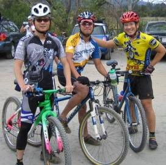

|
2007 Low-Key Hillclimbs Week 7 Results: Alpine Fire Road 10 Nov 2007 |
|  |
| Team Blubber Busters ready for their podium assault |
Thirty of Low-Key's finest threw themselves free from the shackles of asphalt and conquered the first off-road challenge in Low-Key history, the Alpine Fire Road.
From registration, it was clear this would be an interesting day, where equipment selection as well as skill and fitness were going to play a role. Most common were mountain bikes, from full suspension rigs to MTBR's Francis Cebedo's brand spankin'-new Look 595 with a rigid fork, Series leader Tim Clark chose a mountain bike today. Then there was the cross bikes: Steven Woo, who's been racing this season, Clark Foy, with his oh-so-nice custom Ti Seven, and yours truly, riding Cara Coburn's (formerly Erin Kassoy's) Vella Bella team issue Queen Ann. Finally, there were the purists of the group, on road bikes, out to a prove they aren't asphalt slaves, after all.
After a relaxed regroup at the top of the paved portion of Alpine Road, volunteer Crist Clark gave the start signal, and riders threw themselves in a full stampede towards what lay ahead. And even for those of us who'd ridden this before, what lay ahead was a bit of a surprise, as very recently deep gravel had been laid on the lower section of the climb.
But the true test was the bypass. Your humble reporter clumsily dismounted and ran at the first scent of steep trail or exposed roots, basically running the entire single-track. Others, like Lucia Mokres, fearlessly attacked the difficulties, sometimes falling, but always trying. That's the real spirit of Low-Key...
When the dust had cleared, as some had predicted, it was a cross-bike which won the day, with Clark Foy blitzing the course in a Sven Nys-like time of 0:00. Justin Lucke was second, with Brian Edwards third, and Tim Clark in an uncharacteristic fourth place. The women's category was a close contest between the two participants, with Lucia Mokres starting with an early lead, only to lose time from her multiple crashes, leaving Holly Harris to reach the top first.
In the team standings, Clark's excellent ride spear-headed an excellent performance by San Jose Bike Club. Justin's excellent showing led John Walker and Low-Key vet (and hill profiler extraordinaire) Lucas Pereira to bring Google home in second place. And in third, a spectacular podium for Blubber Busters, with Stephen Fong, Jorge Chang, and Adam Tow.
Low-Key returns to the tarmac next week with Sierra Road. We hope all of you who gave this week a skip will join us there!
Thanks to coordinator James Porter, with help from Patt Baenen, Rupert Brauch, Crist Clark, Judy Colwell, Matt McGee, and Eric Melville for making today's climb possible!median time = 18:38
pl # rider team category time mph fph score 1 39 Clark Foy San Jose Bike Club 40+ 14:49 10.12 3847 125.76 2 54 Justin Lucke Google Vegan 15:36 9.62 3654 119.44 3 17 Brian Edwards Hell Riders 25-29 16:04 9.34 3548 115.98 4 124 Jeff Farnsworth San Jose Bike Club 50+ 16:19 9.19 3493 114.20 5 210 Tim Clark Red Dragon 35+ 16:28 9.11 3462 113.16 6 81 Ramon Alarcon San Jose Bike Club 35+ 16:29 9.10 3458 113.04 7 402 Gary Gellin Webcor/Alto Velo 35+ 16:39 9.01 3423 111.91 8 141 Carl A. Nielson Pegasus 45+ 16:45 8.96 3403 111.24 9 284 John Walker Google 40+ 17:12 8.72 3314 108.33 10 400 Lucas Pereira Google 5 17:49 8.42 3199 104.58 11 349 Dennis Pedersen Bike Trip 45+ 18:03 8.31 3158 103.23 12 1 Dan Connelly TNT 3 18:15 8.22 3123 102.10 13 265 Steven Woo LGBRC 4 18:20 8.18 3109 101.64 14 122 Michael Gonia Republic of Anaerobia 40+ 18:28 8.12 3087 100.90 15 50 Francis Cebedo RoadBikeReview 5 18:48 7.98 3032 99.11 16 67 Martin Hyland Western Wheelers 50+ 19:11 7.82 2971 97.13 17 301 Michael Wright SRI 50+ 19:37 7.65 2906 94.99 18 354 Chad Rosser Republic of Anaerobia Triathlete 20:10 7.44 2826 92.40 19 6 Greg Dougald AV: Old Guys Finish 45+ 20:43 7.24 2751 89.94 20 34 Stephen Fong Blubber Busters 5 21:13 7.07 2687 87.82 21 303 Tom Workman STVC 40+ 21:19 7.04 2674 87.41 22 404 Mark Valentino San Jose Bike Club 5 22:41 6.61 2513 82.15 23 390 Dan Siehl Valley Presbyterian Superannuated Biochemist 22:53 6.55 2491 81.43 24 408 Richard Contreras 23:07 6.49 2466 80.61 25 77 Jorge Chang Blubber Busters Infinity 25:11 5.96 2263 73.99 26 396 Al Painter Sport Velo 5 25:24 5.91 2244 73.36 27 212 Pete Jollymour 6 25:55 5.79 2199 71.90 28 49 Adam Tow Blubber Busters Infinity 27:29 5.46 2074 67.80
median time = 21:15
pl # rider team category time mph fph score 1 394 Holly Harris Tibco 45+ 20:57 7.16 2721 101.43 2 270 Lucia Mokres LGBRC 4 21:33 6.96 2645 98.61
pl team score scoring 1 San Jose Bike Club 353.00 (Clark Foy, Jeff Farnsworth, Ramon Alarcon) 2 Google 332.36 (Justin Lucke, John Walker, Lucas Pereira) 3 Blubber Busters 229.61 (Stephen Fong, Jorge Chang, Adam Tow) 4 LGBRC 200.24 (Steven Woo, Lucia Mokres) 5 Republic of Anaerobia 193.30 (Michael Gonia, Chad Rosser) 6 Hell Riders 115.98 (Brian Edwards) 7 Red Dragon 113.16 (Tim Clark) 8 Webcor/Alto Velo 111.91 (Gary Gellin) 9 Pegasus 111.24 (Carl A. Nielson) 10 Bike Trip 103.23 (Dennis Pedersen) 11 TNT 102.10 (Dan Connelly) 12 Tibco 101.43 (Holly Harris) 13 RoadBikeReview 99.11 (Francis Cebedo) 14 Western Wheelers 97.13 (Martin Hyland) 15 SRI 94.99 (Michael Wright) 16 AV: Old Guys Finish 89.94 (Greg Dougald) 17 STVC 87.41 (Tom Workman) 18 Valley Presbyterian 81.43 (Dan Siehl) 19 Sport Velo 73.36 (Al Painter)